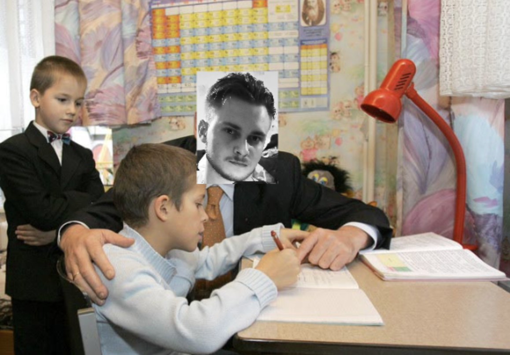
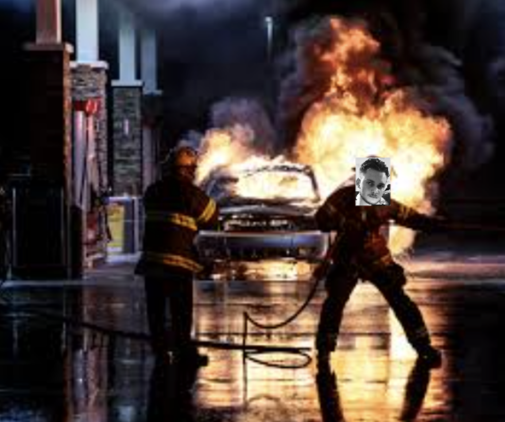
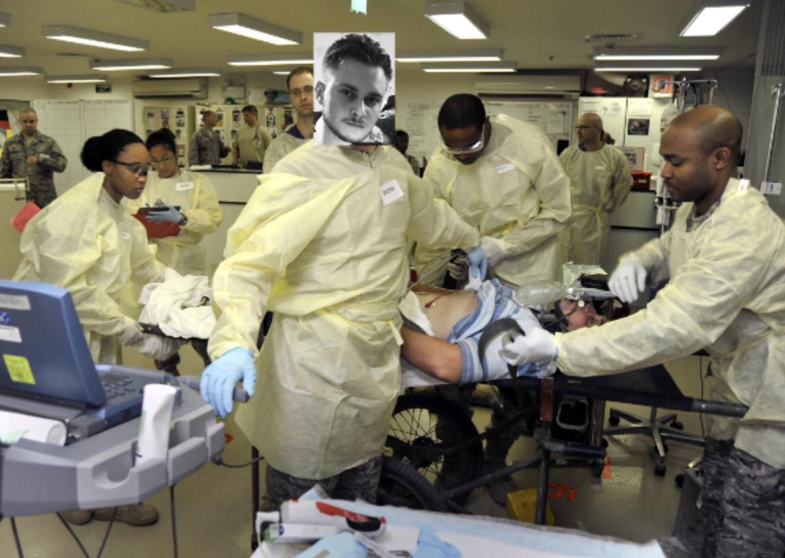

The sensational guy from Kryvyi Rih descended into Lviv to instruct
young and unexperienced pebbles how to write a proper code, drink a
proper drink and save the humanity. And this whole page's purpose is to
show some of his most bright sides.
But Nikita is also a very wise person. Here are some prominent quotes
from him.
- Не май 100 гривень — май один нормальний вакейшн без фінсмарту
- Сьогодні на телефоні натиснув на виклик і поклав його в карман
- Так, Саша, ну шо ти, налий мені, шоб мені соромно не було
- Бля, чому прінт не працює...
These are only a part of the major inheritence left by this man. Other
large part of his magnanimous and generous deeds are his huge love to
those who are close to him. Here are some photos of Nikita and good
things he has done.
Here you can see his majesty coming into orphanage to visit some of
the kids that are without parents

You can see how happy kids are, they can't maintain their emotions.
This is a demonstration of his firefighting skills.

Men like him save multiple lives and you will see one more proof on
the next image.
After a very hard day, Nikita is conducting a super complex operation
on one of his patients' heart.

Luckily, due to his immense skills, patient got healthy very fast and
could live happily from there on.
Here you can see Nikita kindheartedly giving money to on of his
clients.
There was a small accident with a database on his project and he
happily agreed to refund everything.
So, as you see, Nikita truly comes as a hero to humanity. Moreover, he's
a great mentor for other people.
Happy birthday, Nikita! May all your wishes come true.